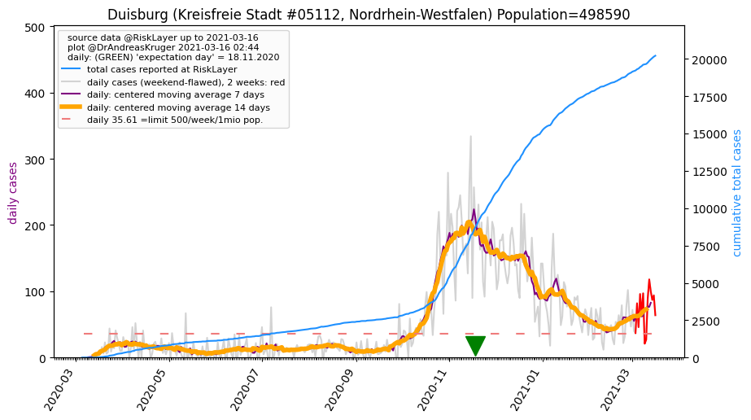
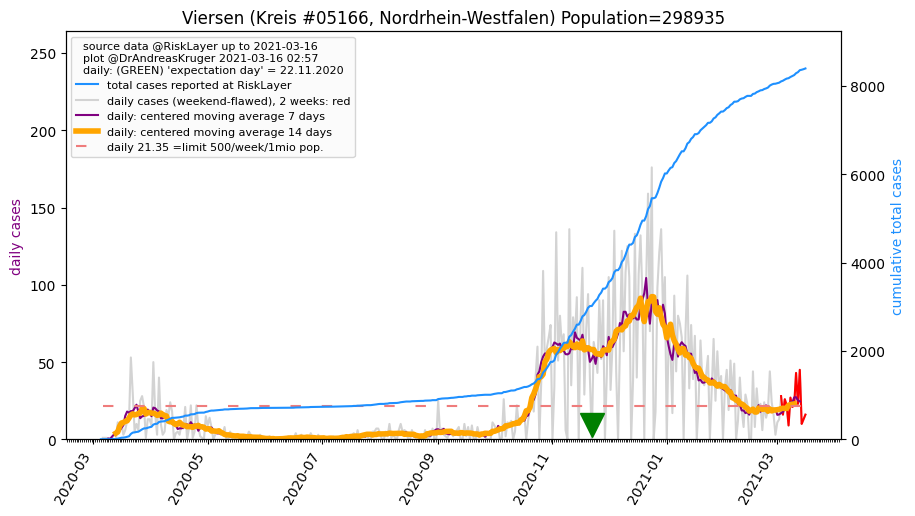
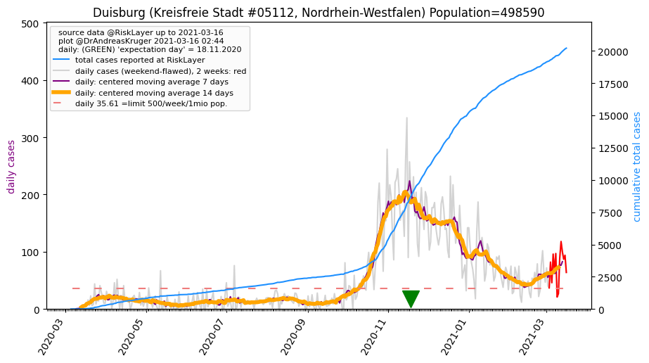
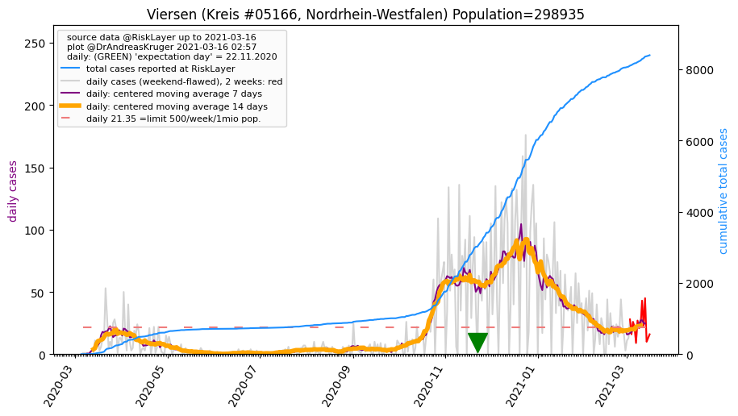

")
")
")

")
")
")
")
")
")
")
")

")
")
")
| Wesel_KR (0.0 km) |
Oberhausen_KS (20.3 km) |
Bottrop_KS (21.8 km) |
Duisburg_KS (22.4 km)  |
| Kleve_KR (25.1 km) |
Mülheim an der Ruhr_KS (29.8 km) |
Krefeld_KS (31.5 km) |
Gelsenkirchen_KS (32.4 km) |
| Essen_KS (35.0 km) |
Recklinghausen_KR (37.8 km) |
Borken_KR (42.0 km) |
Herne_KS (42.1 km) |
| Viersen_KR (43.4 km)  |
Bochum_KS (45.6 km) |
Düsseldorf_KS (45.6 km) |
Mettmann_KR (47.8 km) |
All plots are regenerated with new data every night. Beware this temporary hotspot is an experimental page - it might get removed, so please do not link to it. Instead link to project http://tiny.cc/cov19de.